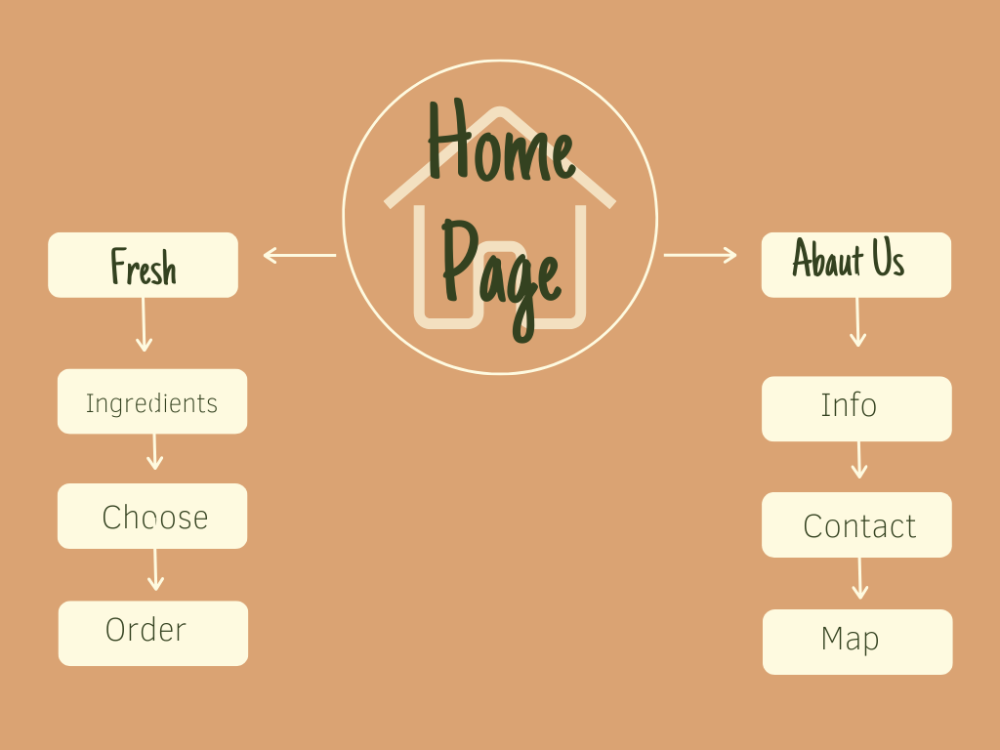
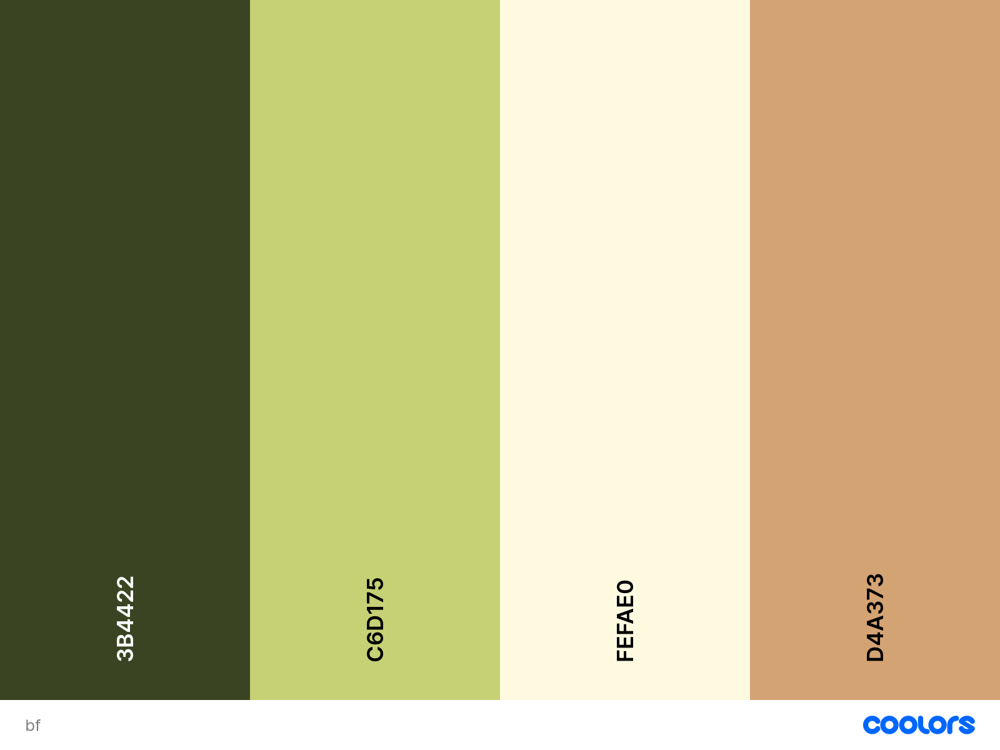

Site purpose
With this website, Bountiful Foods is bringing customers closer to healthy organic, quality, locally grown, and delicious food choices for consumers from Los Angeles to San Diego in the United States west coastal area.
Customers can enter this website to learn more about Bountiful foods and or order pickup or delivery from this website. Shoppers will then get a snapshot of their order and a list of their order's carbohydrates, protein, fat, sugar, and calories.
Target Audience
The target audience for Bountiful Foods is health-conscious shoppers with environmental concerns who care about how their food is produced and how the store associates and employees are treated.
Individuals and families with incomes above the national average live a healthy lifestyle. Shoppers are mainly young families, new college grads working for many of the high-tech companies in the west Area, and retirees.
Bountiful food's typical shopper is a West Coast millennial between 25 and 34 years old.
Site Map
Color Scheme
Typography
For this project I choose Delicious Handrawn for the titles, and 'Montserrat' light, with 200 weight for the rest of the text.
Heading h1 example, font 'Delicious Handrawn'
Paragraph text example, font 'Montserrat: wght@200'
Heading h1 over Color, font 'Delicious Handrawn'
Heading h2 over Color, font 'VDelicious Handrawn'
Heading h3 over Color, font 'Delicious Handrawn'
Paragraph text over Color, font 'Montserrat: wght@200'